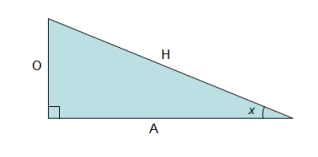
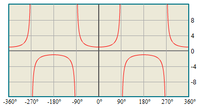

In a right triangle, the secant of an angle is the length of the hypotenuse divided by the length of the adjacent side. In a formula, it is abbreviated to just 'sec'.

Of the six possible trigonometric functions, secant, cotangent, and cosecant, are rarely used. In fact, most calculators have no button for them, and software function libraries do not include them.
They can be easily replaced with derivations of the more common three: sin, cos and tan.
Secant can be derived as the reciprocal of cosine:
For every trigonometry function such as sec, there is an inverse function that works in reverse. These inverse functions have the same name but with 'arc' in front. So the inverse of sec is arcsec etc. When we see "arcsec A", we interpret it as "the angle whose secant is A".
| sec 60 = 2.000 | Means: The secant of 60 degrees is 2.000 |
| arcsec 2.0 = 60 | Means: The angle whose secant is 2.0 is 60 degrees. |
Sometimes written as asec or sec-1
In a right triangle, the two variable angles are always less than 90° (See Interior angles of a triangle). But we can in fact find the secant of any angle, no matter how large, and also the secant of negative angles. For more on this see Functions of large and negative angles.
Because the secant function is the reciprocal of the cosine function, it goes to infinity whenever the cosine function is zero.

In calculus, the derivative of sec(x) is sec(x)tan(x). This means that at any value of x, the rate of change or slope of sec(x) is sec(x)tan(x).
For more on this see Derivatives of trigonometric functions together with the derivatives of other trig functions. See also the Calculus Table of Contents.